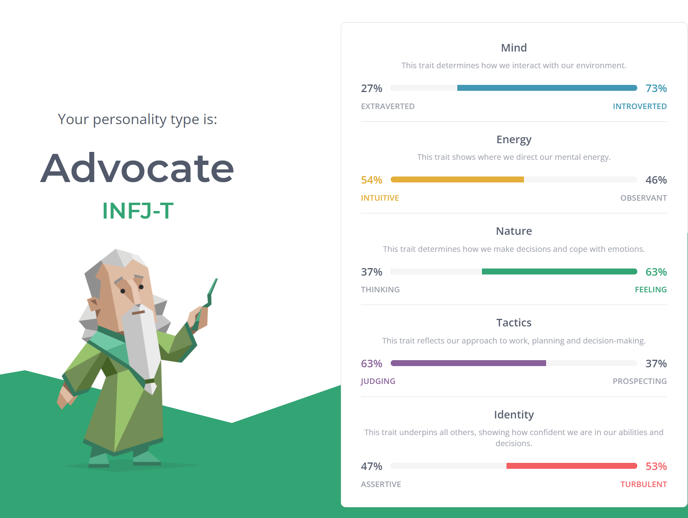

Name: Tran Nam Thai
DOB: 15/11/2002
RMIT Student ID: s3891890
Learning Style
OCEAN Persinonality Traits Scores
Personal Information
I was born and raised in Vinh Phuc province, Vietnam, thus my mother tongue is Vietnamese. I am also fluent in English since I have attended high school and college for 3 years in Canada. I went to Woodbridge College (high school) for 2 years and Ryerson University for a year before I headed back to Vietnam due to the COVID-19 outbreak. My hobby is a bit unique to everybody else. I have a hobby of collecting and modifying custom mechanical keyboards. Typing on a normal membrane keyboard for a long period leads to finger fatigue and it is not a pleasant experience. My field of interest in IT is data and A.I technology. I learned to write simple C++ code to send output “Hello + name” with name as an input. Since then, I do not have any particular IT achievement, but I always have programming as my side hobby.Individual selected test
Educationplanner’s test concludes that I am a visual learner. This helps me find the most efficient method of study. The site also suggests some methods of studying for the visual learner such as: using flashcards, visualizing things when hearing or reading about them. Based on the test’s results, I think I will be able to perform well with a small team. Although the Myer-Briggs test shows that I am an introvert, the Big Five Personality test shows that I am also high on agreeableness and openness. I might not be the one suitable for roles like presenter or working in a large group, but I am open to new and different ideas from other group members.
Bui Viet Ha
Thai is a responsible individual who is well-suited to the role of leader. When our project began, he was the first to notify me, Tri, and Khoa of the assignment; he then built a chat group for our team to discuss work; and, finally, he distributed responsibilities to each team member effectively, fairly, and swiftly. Thai also has extensive understanding of Python, HTML, and CSS, and so plays a major part in web development and design.
Tang Minh Tri
It was my pleasure to work with such a talented teammate. Thai is our superstar in coding websites or applications. Even though learning from scratch, he handled it well. With his creative mind, the first day web layout put our eyes at ease when we were looking at it. The users’ interfaces were user-friendly so we didn’t have to change so much to improve it. Moreover, Thai was great at English as he was the one to fix grammatical errors, and words-in-context.
Nguyen Vo Dang Khoa
With his outstanding coding skills, Tran Nam Thai never failed to exceed the team's expectations. Despite the fact that he started from scratch, his expertise and efficiency much surpass those of his peers. Furthermore, thanks to his innovative thought, we've been able to produce such an aesthetically beautiful interface since the beginning of web design. He's also terrific at assigning responsibilities to members such that none of us must worry about being overworked.
Personally
Although I have learned web programming from scratch for this assignment, I am confident with the result we got. With that said, I think there is room for improvement for the website. For me, I realised that I still have a lot to learn in web programming in particular and in the IT industry in general.